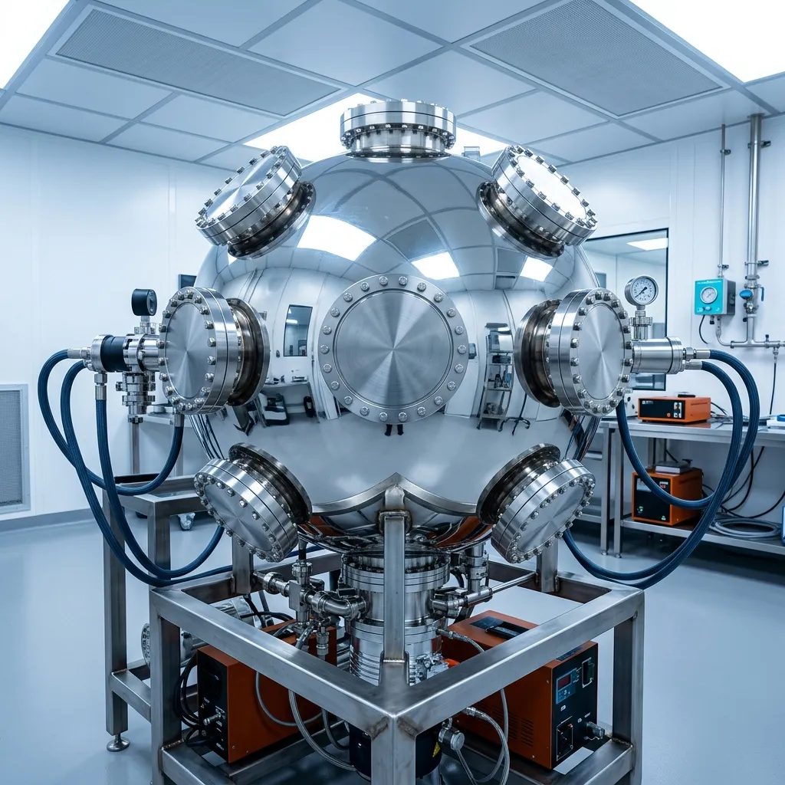

ULTRA-HIGH VACUUM CHAMBERS ENGINEERED FOR SYNCHROTRON BEAMLINES.
Custom 316LN electropolished vacuum vessels, knife-edge ConFlat flanges, and non-magnetic instrumentation for particle physics laboratories.
UHV-74 Precision machines monolithic ultra-high vacuum vessels and precision beamline instrumentation at the Harwell Science Campus. We eliminate microscopic hydrogen outgassing through 950-degree vacuum firing and 5-axis diamond turning of electropolished stainless steel. Every chamber is certified to ten-to-the-minus-twelve mbar-litres-per-second helium leak thresholds before cleanroom nitrogen packaging.
Examine Chamber Tolerances
01 // THE MOLECULAR DESORPTION THRESHOLD
Operating below ten-to-the-minus-ten millibar requires treating stainless steel not as a solid barrier, but as a porous sponge saturated with trapped atmospheric gases. In synchrotron beamline applications, residual hydrogen atoms slowly diffusing from the bulk metal disrupt electron orbits and degrade beam lifetime. Standard industrial welding and commercial machining leave microscopic surface fissures that trap hydrocarbons and water vapour, making true ultra-high vacuum impossible to sustain.
At our Harwell facility, we machine all vacuum enclosures from electro-slag remelted 316LN stainless steel and non-magnetic grade-5 titanium forgings. We electropolish interior surfaces to a mirror roughness below zero-point-zero-eight micrometres, followed by forty-eight hours of vacuum degassing in a high-vacuum furnace at nine hundred and fifty degrees Celsius. This metallurgical treatment purges dissolved hydrogen from the crystalline lattice, reducing ultimate outgassing rates by two orders of magnitude.
Our ConFlat sealing knife edges are machined with zero-point-one-millimetre precision radius profiles that crush oxygen-free high-conductivity copper gaskets with absolute circumferential symmetry. We verify every port geometry using three-axis laser coordinate metrology, ensuring that connected optical spectrometers and particle detectors align within five micrometres of the theoretical beam center.
02 // THE VACUUM HARDWARE MANIFEST
SPHERICAL OCTAGON CHAMBERS
Monolithic 316LN body featuring 8 radial ConFlat ports engineered for complex beamline intersections. Reaches a $1.2 \times 10^{-11}\text{ mbar}$ ultimate vacuum across a 14.2 litre internal volume, with absolute geometric dimensional stability.
£18,400BERYLLIUM BEAM WINDOWS
Diffusion-bonded 0.2 mm high-purity beryllium foil assemblies. Provides zero X-ray beam attenuation coupled with a vacuum-tight brazed interface capable of withstanding extreme thermal cycles.
£4,600EDGE-WELDED BELLOWS
Precision AM350 non-magnetic stainless steel flexure units. Guaranteed for a 50,000-cycle axial and angular stroke, isolating extreme vibrations from the main beamline axis.
£2,150PRECISION CONFLAT FLANGES
CF40 through CF250 knife-edge sealing flanges featuring a 0.1 mm precision radius profile. Hardened to 190 HB to guarantee uniform crushing of oxygen-free copper gaskets.
£380 – £1,850CERAMIC MULTI-PIN FEEDTHROUGHS
High-density alumina dielectric insulators brazed into titanium bulkheads. Rated for 15 kV isolation thresholds and capable of sustaining 250°C continuous bakeout cycles without micro-cracking.
£1,420TITANIUM CRYO-SHROUDS
Oxygen-free titanium thermal radiation shields for absolute cryogenic control. Operational from 4.2 K to 450 K with verifiable zero ferromagnetic distortion near electron beam trajectories.
£3,80003 // METALLURGY & DESORPTION RATES
04 // HELIUM MASS SPECTROMETRY PROTOCOL
01 // Pfeiffer Vacuum Sniffing
We enclose the completed vessel in a global helium envelope. A mass spectrometer actively sniffs the evacuated volume, detecting micro-leaks down to a threshold of 1 × 10^-12 mbar·l/s.
02 // Residual Gas Analysis (RGA) Scan
A quadrupole mass spectrometer scans the internal atmosphere post-bakeout, verifying absolute cleanliness by monitoring mass peaks 18 (H2O), 28 (CO/N2), and 44 (CO2).
03 // Cleanroom Nitrogen Packing
Within a Class-100 cleanroom environment, the certified chamber is sealed and double-bagged under dry boil-off nitrogen to categorically prevent moisture adsorption during global transit.
05 // SYNCHROTRON FACILITY VERIFICATION
"UHV-74 chambers have demonstrated unparalleled molecular stability across our entire electron storage ring, maintaining base pressures critical to our experimental up-time."
"The zero-point-one-millimetre ConFlat knife edges produced by the Harwell workshop provide the most reliable copper gasket seals we have encountered in cryogenic vacuum environments."
"Operating highly sensitive quantum instrumentation requires non-magnetic boundaries. Their grade-5 titanium vessels are structurally flawless and magnetically invisible."
06 // 4-STAGE CHAMBER COMMISSIONING SEQUENCE
CAD STEP Geometry Analysis
We run finite element simulations on your provided CAD models to analyze atmospheric collapse loads and thermal expansion stresses encountered during a 250°C bakeout.
5-Axis Diamond Turning
The entire vessel geometry is CNC machined from a monolithic single-billet 316LN forging, eliminating structural weld seams and the associated trapped volumes wherever physically possible.
950°C High-Vacuum Degassing
The machined components undergo a 48-hour thermal soak in a high-vacuum furnace at 10^-6 mbar, effectively extracting dissolved hydrogen from the steel lattice.
Metrology & Cleanroom Capping
An optical coordinate measuring machine verifies the absolute flatness of all flange faces, before final copper gasket sealing occurs within our ISO Class-5 cleanroom.
07 // TECHNICAL VACUUM ENGINEERING FAQ
What are your magnetic permeability guarantees?
We guarantee a relative magnetic permeability (μr) of less than 1.003 for all 316LN stainless steel vessels. This ensures zero ferromagnetic distortion near highly sensitive electron beams and superconducting magnet yokes.
How should the flange bolts be torqued?
We recommend a cross-pattern tightening sequence applied to silver-plated 12-point bolts to prevent thread galling. Final torque should reach 25 Nm for CF40 flanges to ensure optimal copper gasket deformation.
What are the maximum continuous bakeout limits?
Our standard 316LN vessels utilizing oxygen-free copper gaskets are rated for 250°C continuous bakeout cycles. For extreme temperature desorption, optional nickel gaskets raise the continuous limit to 400°C.
Do you accommodate bespoke port geometry?
Yes. We routinely machine custom port arrays, including curved focal arrangements and glancing-incidence ports for X-ray spectroscopy. All custom geometries undergo the same finite element collapse load analysis.
What are your cleanroom handling protocols?
All finalized chambers are assembled exclusively by technicians wearing powder-free, lint-free nitrile gloves. This strictly prevents the introduction of silicone oils or skin lipids which catastrophically degrade ultimate vacuum.
What are the lead times for bespoke chambers?
Manufacturing lead times for a bespoke spherical octagonal chamber range from 6 to 12 weeks. This includes the mandatory 48-hour high-vacuum furnace firing and final RGA certification.
08 // CHAMBER SPECIFICATION TERMINAL
Harwell Dispatch Depot
UHV-74 Precision Limited
Building R74
Harwell Science and Innovation Campus
Didcot, Oxfordshire
OX11 0QX, United Kingdom
Metrology Desk: 01235 567 890
Logistics: dispatch@uhv74.co.uk